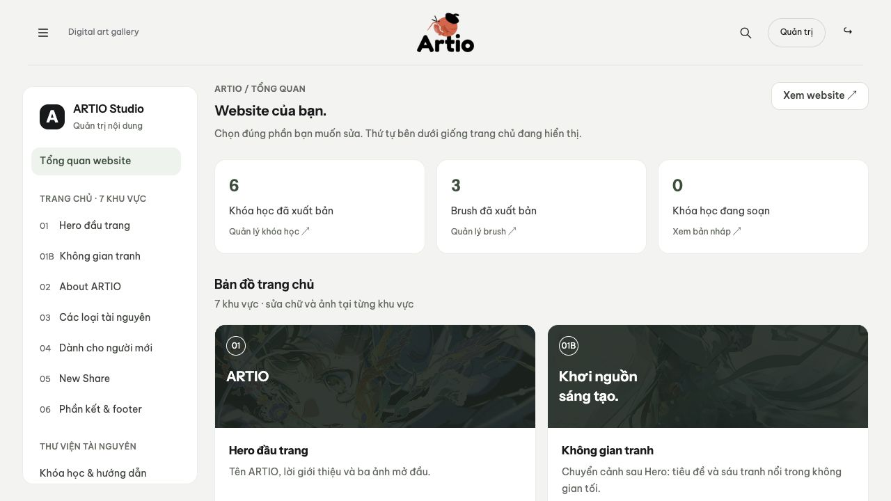

Website hoạt động từng bước và kịch bản demo
Trang này giải thích “cái nào nối với cái nào” bằng từng thao tác cụ thể. Bạn có thể mở source trong VS Code và theo đường dẫn file được nêu trong mỗi bước.
1 Mở một trang để đọc
- Trình duyệt gửi GET /courses.php đến PHP server trên 127.0.0.1:8082.
- router.php kiểm URL có thuộc danh sách route được mở không. Với route đúng, nó nạp courses.php; với assets hợp lệ, PHP server trả file ảnh/CSS/JS.
- courses.php require bootstrap.php. bootstrap nạp config.php và site-content.php, mở session và định nghĩa các hàm dùng chung.
- artio_db() tạo PDO và đọc storage/artio.sqlite. artio_courses() SELECT courses JOIN categories, chỉ lấy published.
- artio_hydrate() biến JSON thành mảng, tính số bài và thời lượng. courses.php lọc/sắp xếp theo tham số GET.
- layout.php sinh header/footer/card; PHP ghép thành HTML. Hàm artio_h() escape văn bản để ký tự người dùng không trở thành mã HTML.
- Trình duyệt nhận HTML, tải các stylesheet và app.js/gallery.js. JavaScript thêm tương tác sau khi trang hiện.

2 Đăng nhập
Hộp thoại trong layout.php
→ app.js đọc email/username và password
→ POST api.php: action=login + token CSRF
→ SELECT users theo email hoặc username
→ password_verify()
→ đổi session id, lưu user_id và tạo CSRF mới
→ JSON báo thành công
→ trình duyệt chuyển trang hoặc cập nhật giao diệnSession ở server giữ user_id. Cookie artio_session là mã phiên để server biết request thuộc phiên nào; cookie không chứa mật khẩu của bạn. Mỗi request cần quyền sẽ đọc người dùng lại qua artio_user(). Đăng ký công khai đặt role student, không cho người nhập tự chọn admin.
3 Lưu một khóa học
Nút data-save-course trong course.php
→ app.js gọi api.php action=save_course
→ kiểm đăng nhập, CSRF và khóa học published
→ thêm hoặc bỏ hàng trong saved_courses
→ JSON trả saved=true/false
→ nút đổi trạng thái; account.php đọc cùng bảng để hiển thịTải lại trang vẫn giữ trạng thái vì đã ghi vào database. Nếu chỉ đổi chữ trên nút bằng JavaScript mà không gọi API, tải lại sẽ mất thay đổi.
4 Admin sửa chữ và ảnh trang chủ
- Admin mở admin.php?view=site§ion=about. admin.php kiểm role; admin-ui.php tạo form theo schema trong site-content.php.
- admin.js thu dữ liệu form và gọi action site_content_save. API kiểm lại quyền admin, CSRF, độ dài chữ và đường dẫn ảnh.
- API ghi content_about_* vào site_settings trong transaction; nếu một phần thất bại, không giữ một nửa thay đổi.
- index.php đọc cùng site_settings khi mở lại. About ngoài trang đổi theo giá trị đã lưu; không cần sửa index.php.
Khi tải một ảnh mới lên
admin.js gửi form-data đến api.php action=upload. API kiểm file thật bằng fileinfo/getimagesize, nhận JPG/PNG/WebP, tối đa 6 MB và 8000 px mỗi chiều. API đổi tên ngẫu nhiên, lưu trong uploads và trả url. Form điền URL mới; bạn vẫn cần bấm Lưu nội dung để database dùng ảnh đó.
5 Admin soạn và xuất bản tài nguyên
Editor khóa học → admin.js → action=course_save
→ kiểm admin/CSRF, danh mục, ảnh, mô tả, chương/bài
→ JSON hóa curriculum và ghi courses
→ cập nhật version và status
→ published: thư viện đọc được; draft: chỉ admin xem trướcBrush đi qua action brush_save với cách kiểm status/version tương tự. Danh mục dùng category_save; đổi tên danh mục đồng bộ tên tương thích của các khóa học liên quan. Hai tab sửa cùng một tài nguyên có thể xung đột version; hệ thống yêu cầu tải lại để đối chiếu.
6 Bình luận và liên hệ
app.js gửi comment_add, API kiểm login, tài nguyên published và giới hạn tốc độ, rồi thêm comments. comment_hide chỉ cho chủ bình luận hoặc admin, đặt hidden=1. comments.php đọc các bình luận hidden=0 và nối users để có tên người viết.
Liên hệ hiện tại mở Facebook đã cấu hình. contact.php là route cũ chuyển hướng Facebook. API contact và bảng contact_messages vẫn có; admin có mục hộp thư, nhưng menu hiện tại không phải form gửi lời nhắn. Newsletter cũng giữ API/bảng cũ mà không có mục đăng ký trên landing hiện tại.
7 Hiệu ứng và bố cục hoạt động ra sao
| Phần | Cách hoạt động |
|---|---|
| Hero | landing.js tính tỷ lệ theo bố cục 1440 × 601 ở desktop; bố cục dọc ở màn hình hẹp. landing.css phóng ảnh lớn 18% desktop, 10% compact và dùng mask cho mép mềm. |
| Không gian tranh và reveal | Theo vùng nhìn/scroll, JavaScript thêm class và cập nhật chuyển động. Ảnh/heading từ ngoài đi vào khi người xem đến phần đó. |
| About | 14 tranh chia 2 track; tái sử dụng vị trí ảnh khi cuộn. Dừng khi ngoài vùng nhìn, hover/focus, tab ẩn hoặc bấm pause. |
| Người mới | 3 panel position:sticky xếp lớp; JavaScript cho chữ hiện ở panel đang tới vùng đọc. |
| New Share | gallery.js quản lý duy nhất carousel, đếm slide và nút. Tự chạy 4,2 giây khi visible; tương tác, hover/focus, tab ẩn hoặc pause sẽ dừng. |
| Zoom ảnh | CSS transform scale(1.045) trong khung overflow:hidden. Chỉ hover trên thiết bị hỗ trợ; focus có phản hồi; prefers-reduced-motion bỏ zoom. |
| Giảm chuyển động | Khi hệ điều hành bật reduced motion, autoplay/trang trí được tắt; nội dung vẫn đọc được. Không có JavaScript vẫn có chữ và link; auth cần JavaScript. |
8 Kịch bản demo khoảng 10 phút
- Mở trang chủ, giới thiệu mục đích và 7 phần. Cuộn tới About/người mới; chỉ New Share đang tự chạy và thử pause.
- Mở courses.php, lọc chủ đề và sắp xếp. Mở search.php tìm “vẽ” rồi “ve” để giải thích chuẩn hóa tiếng Việt.
- Khi chưa login bấm một thẻ để thấy yêu cầu tài khoản. Đăng nhập admin/admin, dashboard hiện ra.
- Mở course.php?id=1; xem chương/bài, bấm Xem bài, lưu và kiểm tra account.php. Gửi một bình luận thử trên bản demo; thử ẩn.
- Mở Brush library, vào chi tiết và chỉ các thông tin tác giả, phần mềm, nguồn. Giải thích ARTIO lưu URL, không tự sở hữu file brush.
- Vào admin About, đổi một câu chữ rồi lưu; mở trang ngoài và tải lại để thấy thay đổi.
- Tạo khóa học demo: tên/slug, danh mục, cấp độ, ảnh, mô tả, một chương/một bài. Lưu nháp rồi xem trước. Xuất bản và kiểm thư viện. Sau demo giữ nháp nếu không muốn xuất hiện ngoài trang.
- Chỉ sơ đồ mô hình: categories → courses; users ↔ courses qua saved_courses; comments gắn đúng một tài nguyên.
- Trình bày HTML/CSS/JS/PHP/SQL và chỉ file đại diện. Python chỉ để test.
- Nêu kết quả và giới hạn: nội dung mẫu, link ngoài, chưa có thanh toán/tiến độ; gói chạy local.

9 Tự kiểm tra sau giải nén
| Kiểm tra | Kết quả mong đợi |
|---|---|
| Mở / và 3 trang thư viện/tìm kiếm | Trang tải đúng, CSS/ảnh không lỗi; thẻ published xuất hiện. |
| Đăng nhập admin/admin | Vào được dashboard và các form quản trị. |
| Đăng ký tài khoản thử | Role student; không vào form admin; lưu/bình luận được. |
| Sửa About rồi tải lại trang chủ | Câu chữ mới hiện đúng khu vực. |
| Lưu khóa học rồi mở account.php | Khóa học xuất hiện; bỏ lưu thì biến mất. |
| Nháp và xuất bản | Nháp không hiện ở thư viện công khai, published có hiện. |
| Rê chuột lên thẻ và đổi màn hình hẹp | Chỉ ảnh zoom trong khung, không tràn ngang; bố cục chuyển phù hợp. |
Người có Python 3 có thể chạy bộ integration. Bộ kiểm thử dùng SQLite tạm, có tạo ảnh thử và dọn sau; không ghi nội dung thử vào database mẫu đang dùng. Chạy tại 01-Source-code:
python3 tests/integration.py --php php
# Windows, nếu dùng Python và XAMPP:
python tests\integration.py --php "C:\xampp\php\php.exe"Khi bàn giao đã kiểm thử trên PHP với SQLite ở macOS, giải nén gói và mở các route, đăng nhập admin, kiểm quyền/CMS/ảnh. CHAY-ARTIO.cmd đã đọc kiểm lệnh nhưng chưa chạy trên máy Windows thật. Kiểm responsive trên trình duyệt chưa thay thế thử chạm trên điện thoại thật.